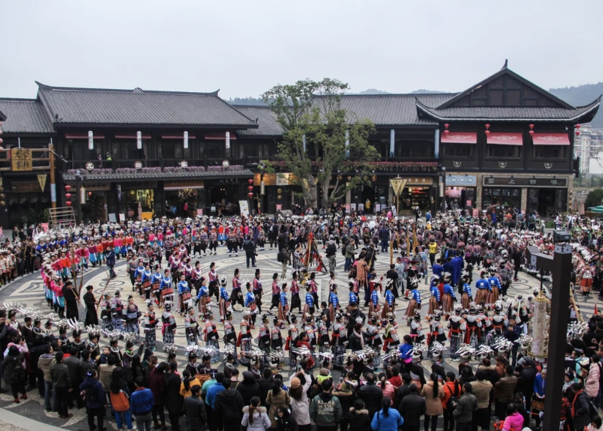
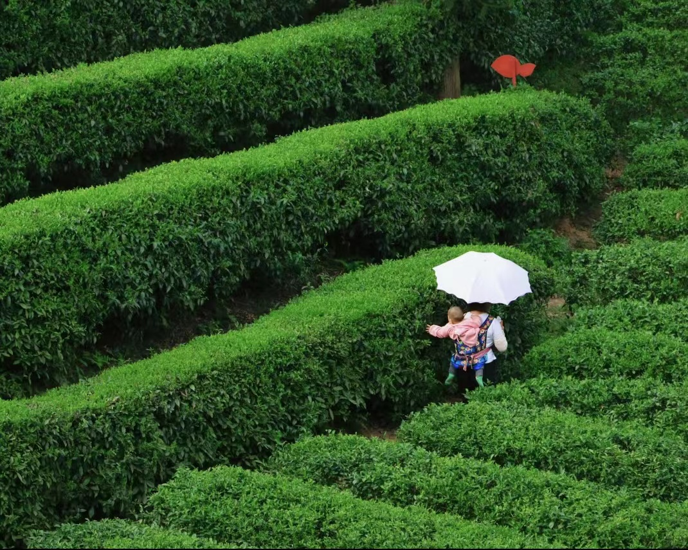
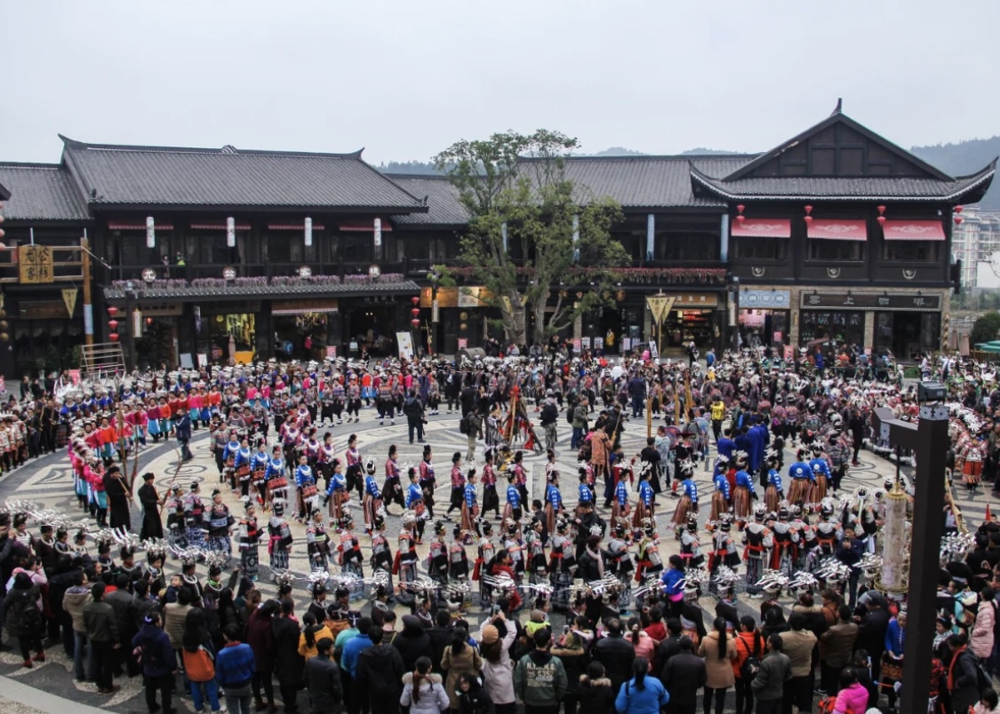
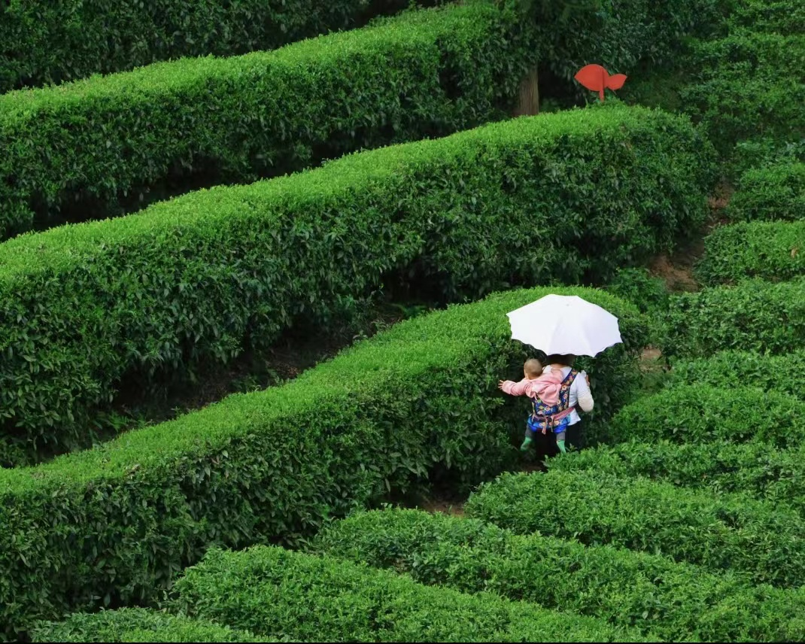

丹寨蜡染非遗之魅
 



丹寨蜡染的起源可以追溯到古代。据考古发现，早在新石器时代，丹寨地区就已经有了蜡染的雏形。
古代时期
秦汉
在范晔的《后汉书西南夷传》描述中的染彩与细布，或许就与蜡染缠有几分联系
蜡染盛行于隋唐，在唐代李吉普的《元和郡县志》中提贵州都会向首都长安进贡大量的蜡，蜡染的重要制作原料蓝草也在全省范围内广泛种植
隋唐
南宋
南宋时期，1163年进士，曾担任桂林通判的周去非也曾对蜡染优秀的工艺技巧进行赞美。
丹寨蜡染面临着前所未有的挑战和机遇。随着社会的发展和科技的进步，传统的蜡染工艺逐渐被现代工业所取代，丹寨蜡染也面临着失传的危险。
近现代时期